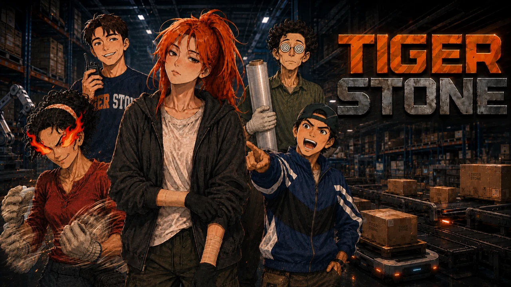

1인 인디게임 · Godot · STOVE 출시
TIGERSTONE
타이거스톤
자동화 물류센터에서 계약직 노동자로 30일을 보내는 생존 시뮬레이션.
- 핵심 설계
- 물류센터 업무와 퇴근 후 생활을 하나의 플레이 흐름으로 연결했습니다.
- 완성을 위한 작업
- 제작 범위를 조정하고 오류를 수정해 STOVE에 출시했습니다.
담당 기획·시스템 설계·콘텐츠 구성·UI 개선·구현·QA
AI 활용 · 개발 보조 및 검수
STOVE 게임 페이지공식 트레일러
플레이 소개 · 55초
개발기
세계관 제작 과정 · 39초